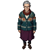
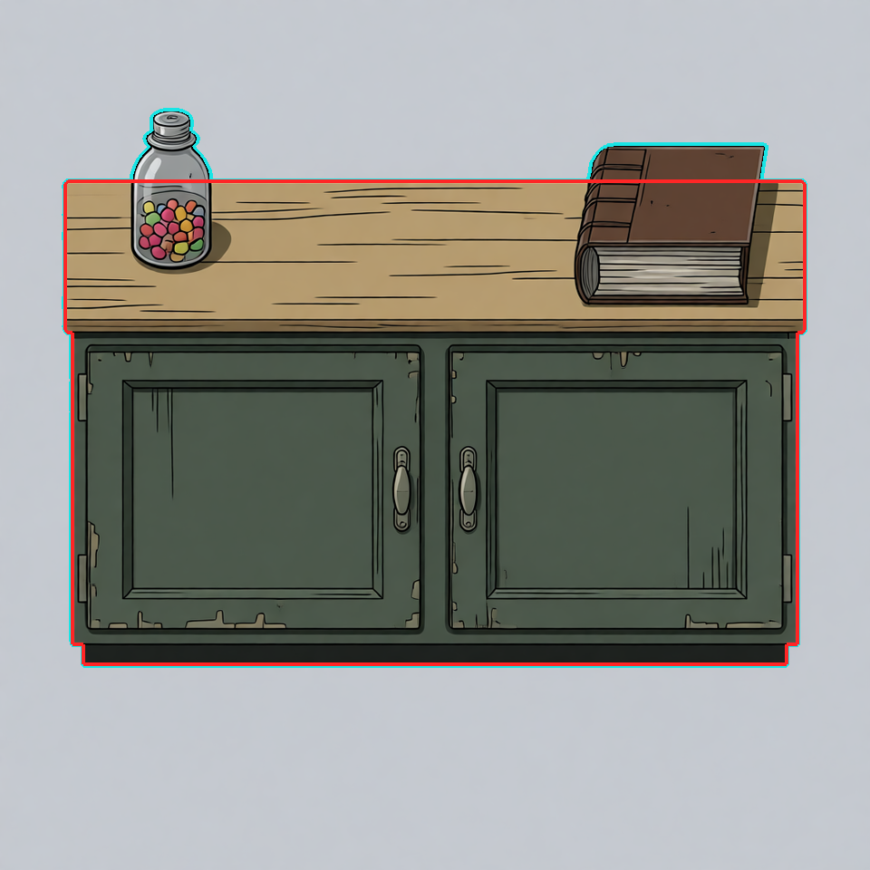
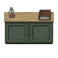

lada a_s9100 (opis A: an old shop counter made of dark stained wood with two panelled doors and a thick wooden top with natural lived-in details: an old brass cash register and a stack of papers on the top)


podstawa pokryta 100.0% · dodatki poza podstawą 3.8% · dół względem podłogi 2 px (1 px gry = 10)

lada a_s9101 (opis A: an old shop counter made of dark stained wood with two panelled doors and a thick wooden top with natural lived-in details: an old brass cash register and a stack of papers on the top)


podstawa pokryta 100.0% · dodatki poza podstawą 5.2% · dół względem podłogi 2 px (1 px gry = 10)
lada b_s9100 (opis B: an old shop counter painted muted dark green with a worn light oak top and two panelled doors with natural lived-in details: a glass jar of sweets and a thick ledger book on the top)

podstawa pokryta 100.0% · dodatki poza podstawą 3.8% · dół względem podłogi 2 px (1 px gry = 10)
